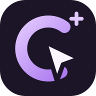

Ваш следующий шаг
Личные и совместные цели, отметки дней и заметки.

clickngoalЦЕЛИ · ПРОГРЕСС · ЛЮДИ
Социальная сеть для ваших целей. Отмечайте прогресс, находите единомышленников и поддерживайте друг друга.
iPhone · iPad · Android · Windows · macOS · Linux · ChromeOS
Личные и совместные цели, отметки дней и заметки.
Календарь, выполненные дни и понятные серии.
Профили, сообщества, комментарии и поддержка.
WEB / PWA / ANDROID
Рабочая соцсеть открывается в современном браузере. Установка добавляет удобный доступ к тому же сервису.
Safari → «Поделиться» → «На экран Домой» → «Открывать как веб-приложение», если есть → «Добавить».
Веб-приложение с сайта; отдельного пакета App Store нет.Используйте «Установить приложение» в Chrome либо скачайте официальный подписанный APK ниже.
Браузер, PWA и APK используют ваш аккаунт рабочей платформы.Откройте в современном браузере. Поддерживаемый Chrome/Edge/Chromium предлагает установку.
Firefox работает как браузерная версия; установка зависит от браузера.Браузер, установка через подходящий Chrome/Edge либо Safari → «Добавить в Dock» на поддерживаемой macOS.
Отдельная сборка DMG/PKG здесь не предлагается.Установить можно позже. Инструкции остаются здесь, даже если вы закрыли предложение установки в приложении.
Открыть веб-приложение ↗GITHUB RELEASES
Рабочая соцсеть и скачиваемый локальный пример решают разные задачи. Выберите нужный вариант.
Последняя подписанная сборка APK clickngoal для вашего настоящего аккаунта.
Скачать APK ↓— скачиваний файла
Собранный локальный пример: вымышленное сообщество и хранение в браузере.
Скачать веб-ZIP ↓— скачиваний файла
Исходники MIT, тесты и документация. Полный рабочий сервис остаётся вне репозитория.
Скачать исходники ↓— скачиваний файла
Данные из GitHub Releases, включая повторные скачивания и все релизы. Это загрузки файлов, а не число людей или установок PWA. Скрипта слежения за посетителями нет.
MIT / COMMUNITY FOUNDATION
Настоящие модули прогресса, календаря и темы из clickngoal открыты под MIT. Рядом — небольшой запускаемый пример сообщества. Изучайте, используйте и улучшайте.
Полный код рабочей соцсети, сервер входа, база пользователей и инфраструктура не опубликованы. Официальный APK использует условия приложения; MIT относится к этой открытой основе.
git clone https://github.com/jabrailkhalil/clickngoal.git
cd clickngoal
npm ci
npm run dev
npm run check